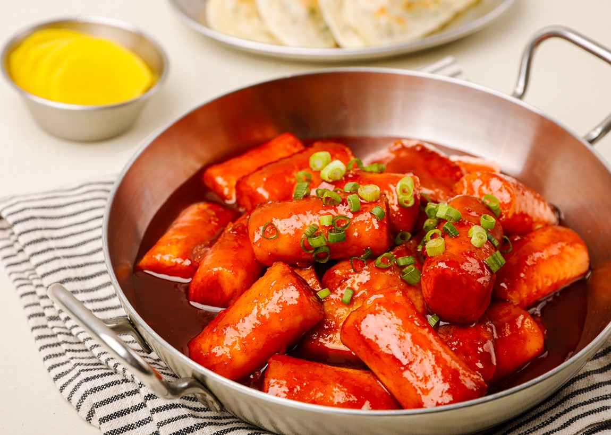

Tteokbokki

Description
Tteokbokki is a popular Korean street food made with chewy rice cakes simmered in a spicy, sweet, and savory sauce. The key ingredients are soft, cylindrical rice cakes, gochujang (Korean red chili paste), soy sauce, brown sugar, and broth. The resulting dish has a complex, addictive flavor profile that is simultaneously spicy, savory, and subtly sweet. Tteokbokki is commonly served as a snack or light meal, often with additional toppings like scallions and boiled eggs. It is a beloved comfort food in Korea and has gained global popularity as Korean cuisine has become more widely known.
Ingredients
- 1lb rice cakes
- 1/2 cup gochujang
- 2 tbsp brown sugar
- 2 tbsp soy sauce
- 1 tbsp sesame oil
- 2 cloves garlic, minced
- 1 tsp grated ginger
- 2 green onions, sliced
Steps
- Soak the rice cakes in hot water for 10-15 minutes to soften.
- In a medium saucepan, whisk together the gochujang, brown sugar, soy sauce, sesame oil, garlic, and ginger.
- Add the broth and bring the mixture to a simmer over medium heat.
- Drain the softened rice cakes and add them to the simmering sauce. Cook for 10-12 minutes, stirring occasionally, until the sauce has thickened and the rice cakes are tender.
- Remove from heat and stir in the sliced green onions.
- Serve hot, garnished with the halved hard boiled egg (if using) and a sprinkle of sesame seeds